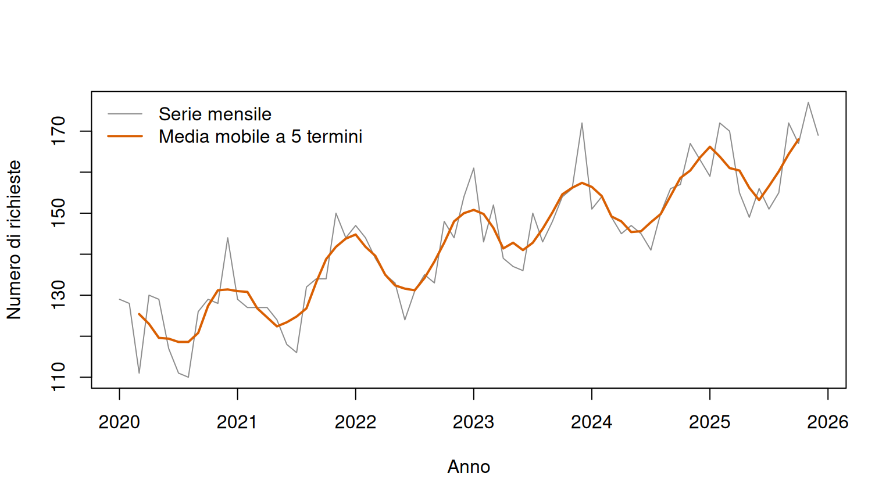

Una spesa pubblica che passa da 420 a 450 milioni di euro è aumentata di 30 milioni. Questi valori presentati in questo modo forniscono un’informazione povera e piena di ambiguità. Ad esempio, è abbastanza natnaturale chiedersi tutta una serie di domande collaterali, come:
Questo aumento è da considerarsi “grande” o “piccolo”?
I prezzi sono cambiati?
La popolazione servita è cresciuta a livello economico?
Il benessere globale è migliorato?
Il confronto riguarda due mesi con lo stesso numero di giorni lavorativi?
Il livello osservato risente della normale stagionalità?
In pratica, le serie storiche “grezze”, ovvero contenenti i dati così come sono state raccolti, sono spesso rielaborate per ottenere delle ifnormazioni più corpose e permettere così di rispondere a domande di questo tipo. Per fare questo si fa uso di una serie di trasformazioni matematiche, ovvero delle operazioni che cambiano la scala o la forma della serie. Non si tratta di operazioni puramente tecniche, ma tramite l’applicazione di funzioni che rispondono ad una serie di caratteristiche (es. continue e monotone), è possibile mettere in evidenza un aspetto del fenomeno e, allo stesso tempo, attenuarne altri.
Nell’analisi economica si fa uso di trasformazioni per preparare i dati e renderli più adatti all’analisi (Hyndman e Athanasopoulos 2014), e servono soprattutto a:
confrontare grandezze con livelli o unità differenti;
distinguere crescita nominale e crescita reale;
tenere conto della dimensione della popolazione o del calendario;
rendere più regolari trend, stagionalità e variabilità;
preparare una serie per l’analisi e la previsione.
Una trasformazione appropriata dipende sempre dalla domanda empirica. La stessa serie può essere studiata in livello, in differenze assolute, in tassi di crescita o in termini reali. Nessuna di queste rappresentazioni è universalmente migliore, è il contesto di ricerca che indurrà a ferci preferire una trasformazione piuttosto che un’altra.
5.1 Dal livello alla variazione
Indichiamo con \(Y_t\) il valore di una grandezza al tempo \(t\) e con \(y_t\) il valore effettivamente osservato. Il livello conserva l’unità originaria: euro, occupati, tonnellate, voti o posti letto. È la rappresentazione naturale quando interessa la dimensione del fenomeno.
Per valutare la dinamica nel tempo confrontiamo \(y_t\) con un valore precedente. Se le osservazioni sono annuali, \(y_t-y_{t-1}\) è il cambiamento rispetto all’anno precedente; se sono mensili, è il cambiamento rispetto al mese precedente.
5.1.1 Variazione assoluta
Detta anche differenza prima, esprime la variazione assoluta tra due periodi consecutivi:
\[\Delta y_t=y_t-y_{t-1},\]
dove il simbolo \(\Delta\) indica l’operatore di differenza. La variazione è positiva se il fenomeno aumenta, nulla se rimane invariato e negativa se diminuisce. Mantiene la stessa unità di misura della serie.
Esempio 5.1: Occupati
Se gli occupati passano da 80.000 a 82.400, la differenza è \(82.400-80.000=2.400\): vi sono 2.400 occupati in più. Questa informazione è utile per programmare servizi o valutare la dimensione complessiva del mercato del lavoro, ma non dice se l’aumento sia “grande” o “piccolo” rispetto alla situazione iniziale.
dove \(h\) è il numero di periodi che separa le osservazioni. Con dati mensili, \(h=12\) confronta lo stesso mese di due anni consecutivi. La differenza stagionale è stata introdotta nel capitolo sulle serie storiche.
5.1.2 Variazione relativa e percentuale
La variazione relativa ha come riferimento una differenza prima, ma ne rapporta il cambiamento al livello iniziale:
Il simbolo \(g_t\) indica il tasso di variazione tra \(t-1\) e \(t\). In pratica si passa ad un valore relativo, ed infatti \(g_t\) è un numero puro: non dipende dall’unità in cui è espressa la grandezza. Moltiplicandolo per 100 otteniamo la variazione percentuale. Nell’esempio Esempio 5.3 si otterrebbe:
\[g_t=\frac{82.400-80.000}{80.000}=0{,}03,\]
quindi gli occupati sono aumentati del 3%. Attenzione a come leggere il risultato! Ad essere precisi, per ottenere il valore percentuale occorre moltiplicare \(0,03\) per 100, quindi il tasso di crescita è pari \(3\%\). Dire “0,03%” sarebbe un errore: 0,03 è il tasso espresso in forma decimale, mentre 3 è lo stesso tasso espresso in percentuale.
Per un confronto a distanza di \(h\) periodi usiamo
\[g_t^{(h)}=\frac{y_t-y_{t-h}}{y_{t-h}}.\]
Il denominatore è il valore di partenza. Se il denominatore è uguale a zero, il tasso non è definito, mentre se è molto piccolo il risultato può essere enorme e poco informativo. In questi casi la variazione relativa non è un indicatore sufficientemente informativo. In alternativa, si può presentare la variazione assoluta e descrivere esplicitamente il cambiamento.
Esempio 5.2: Percentuali e punti percentuali non sono la stessa cosa
Se il tasso di disoccupazione passa dall’8% al 10%, l’aumento è di 2 punti percentuali. In termini relativi, invece, è \((10-8)/8=0{,}25\), cioè il 25%. Le due affermazioni sono corrette, ma rispondono a domande diverse.
5.1.3 Crescite successive e crescita media
Attenzione a come gestire i tassi di crescita. Si noti che non è possibile sommare i tassi relativi di periodi successivi, perché ogni variazione si applica a una base diversa. Supponiamo che una spesa aumenti del 10% e poi diminuisca del 10%. In maniera (erroneamente) intuitiva, si potrebbe pensare che il livello finale sia uguale a quello iniziale. In realtà, la diminuzione del 10% si applica a un valore più alto di quello iniziale, quindi il risultato è sicuramente inferiore al punto di partenza. I valori sono \(g_t=1{,}10\) e \(g_{t+1}=0{,}90\). Se volessimo calcolare il tasso complessivo tra \(t-1\) e \(t+1\), dovremmo moltiplicare i fattori di crescita:
\[y_0\times 1{,}10\times 0{,}90=0{,}99y_0,\]
quindi il tasso complessivo di crescita risulta essere inferiore dell’1% al valore iniziale!
L’aumento necessario per compensare una diminuzione percentuale è sempre più grande, in valore assoluto, della diminuzione stessa: dopo una perdita del 50% occorre una crescita del 100% per tornare al livello iniziale.
Tra il periodo 0 e il periodo \(T\), definiamo il tasso medio composto come
\[\bar g=\left(\frac{y_T}{y_0}\right)^{1/T}-1,\]
dove \(T\) è il numero di intervalli temporali e \(\bar g\) è il tasso costante che produrrebbe lo stesso cambiamento complessivo. Non è la media aritmetica dei tassi annuali. Inoltre, descrive una traiettoria equivalente: non implica che il fenomeno sia realmente cresciuto allo stesso ritmo ogni anno.
Esempio 5.3: Esempio simulato
Consideriamo dati didattici sulla spesa sociale di un territorio. I valori sono costruiti e non descrivono un ente reale. La spesa è espressa in milioni di euro; l’indice dei prezzi vale 100 nel 2019; la popolazione è il numero di residenti. Non vi è casualità nella costruzione, quindi non occorre fissare un seme.
La prima riga contiene valori mancanti per le variazioni perché non disponiamo dei dati al 1018 perchè è precedente al 2019. Dal 2019 al 2020 la spesa cresce di 18 milioni, pari al 4,3% circa. Dal 2024 al 2025 aumenta invece di 28 milioni, ma il tasso è circa il 5,0% perché il livello di partenza è molto più alto. Differenza assoluta e variazione percentuale offrono quindi informazioni complementari.
5.2 Logaritmi e tassi di crescita
Quando le oscillazioni aumentano insieme al livello della serie, il logaritmo può rendere la variabilità più uniforme. È utile anche quando il processo è “naturalmente” moltiplicativo, come nel caso di diversi fenomeni finanziari (come redditi, prezzi, ammortamenti, interessi, etc.) i quali evolvono spesso attraverso fattori di crescita variabili e non necessariamente costanti. Per valori strettamente positivi definiamo
\[w_t=\log(y_t),\]
dove \(\log\) indica il logaritmo naturale e \(w_t\) è la serie trasformata. Il logaritmo ha un effetto di “compressione” dei dati, trasformando quantità derivanti da prodotti in somme: detto in altri termini la trasformazione logaritmica “allontana osservazioni vicine mentre avvicina quelle lontane”. Per esempio, se \(y_t=y_{t-1}(1+g_t)\), allora
AvvisoQuando non è possibile utilizzare il logaritmo
Si ricordino le carattersitiche del logaritmo. Il logaritmo naturale non è definito per zero o valori negativi., quindi nel caso in cui abbiamo valori di \(y_t\leq0\) non è possibile calcolare il logaritmo. In alcuni casi però si hanno a disposiozione dati non negativi, ovvero \(y_t \geq 0\), dove però lo zero è compreso. In questi casi particolari, si pyò ricorrere ad una correzione ulteriore, ovvero aggiungere automaticamente una costante nell’argomento del logaritmo: \[\log(y_t+1)\] Questo approccio aiuta a risolvere tecnicamente il problema nel caso in cui si presentino valori nulli di \(y_t\). Il problema è che questo aggiustamento cambia totalmente il significato della trasformazione e non è trascurabile, soprattutto quando \(y_t\) sono valori piccoli tendenti a zero, in tal caso il risultato presenterebbe un errore di approssimazione non trascurabile. Quindi, la scelta si usare il logaritmo e di effettuare successive correzioni va motivata correttamente e nel caso in cui i dati presentano valori nulli è preferibile ricorrere ad altri metodi più specifici.
Il logaritmo non elimina necessariamente il trend o la stagionalità. Può stabilizzare l’ampiezza delle oscillazioni, mentre le differenze agiscono soprattutto sui cambiamenti di livello. Le due operazioni rispondono a problemi distinti e, quando necessario, possono essere combinate. Trasformazioni di potenza più generali, come la famiglia Box–Cox, esistono ma sono rinviate ai corsi di previsione più avanzati.
5.3 Correggere per gli effetti di calendario
I totali mensili possono variare solo perché i mesi hanno un numero diverso di giorni o di giornate lavorative. Se un servizio registra 3.100 accessi in un mese di 31 giorni e 2.800 in uno di 28, entrambi corrispondono a 100 accessi medi al giorno. Il totale è diverso, l’intensità giornaliera no.
Se \(y_t\) è il totale del mese e \(d_t\) il numero di giorni rilevanti, la media giornaliera è
\[y_t^{day}=\frac{y_t}{d_t}.\]
Per vendite o produzione si possono usare i giorni lavorativi; per pronto soccorso o trasporto pubblico possono essere rilevanti tutti i giorni oppure categorie separate di giorni. La scelta del denominatore deve riflettere il processo osservato.
Correggere per il calendario non significa eliminare la stagionalità. Festività mobili, chiusure scolastiche e comportamenti stagionali possono rimanere anche dopo avere tenuto conto della lunghezza del mese. Inoltre, il totale mensile resta la misura appropriata quando interessa il carico complessivo di lavoro o di spesa.
5.4 Stagionalità e destagionalizzazione
La stagionalità è una variazione che tende a ripetersi nello stesso periodo dell’anno. Può nascondere il movimento congiunturale: un calo dell’occupazione tra dicembre e gennaio potrebbe essere normale, mentre un calo più forte di quello abituale può segnalare un peggioramento.
La destagionalizzazione rimuove la componente stagionale stimata. Nel modello additivo,
\[y_t=T_t+S_t+R_t,\]
la serie destagionalizzata è \(y_t-S_t=T_t+R_t\). I simboli \(T_t\), \(S_t\) e \(R_t\) indicano rispettivamente trend-ciclo, stagionalità e resto al tempo \(t\). Nel modello moltiplicativo \(y_t=T_tS_tR_t\), la serie destagionalizzata è \(y_t/S_t\).
La serie destagionalizzata non coincide con il trend. Contiene ancora il resto, gli shock e gli errori di misura. Inoltre, poiché la componente stagionale viene stimata, i valori destagionalizzati più recenti possono essere rivisti quando arrivano nuove osservazioni.
5.4.1 Differenza stagionale o destagionalizzazione?
La differenza stagionale
\[\Delta_m y_t=y_t-y_{t-m}\]
confronta la stessa stagione a distanza di un ciclo, dove \(m=12\) per dati mensili e \(m=4\) per dati trimestrali. Cambia l’oggetto di studio: produce una serie di variazioni annuali. La destagionalizzazione, invece, conserva una stima del livello al netto della stagione.
Per comunicare la dinamica economica sono comuni due confronti:
la variazione congiunturale, tra periodi consecutivi, spesso calcolata su dati destagionalizzati;
la variazione tendenziale, rispetto allo stesso periodo dell’anno precedente, che attenua una stagionalità stabile ma incorpora tutto ciò che è accaduto nei dodici mesi.
I due tassi non sono intercambiabili. Un indicatore può crescere rispetto al mese precedente e restare inferiore allo stesso mese dell’anno precedente.
5.5 Smussare una serie per leggere il segnale
Una media mobile centrata sostituisce ogni osservazione con la media di un intorno temporale. Se l’ampiezza della finestra è un numero dispari \(m=2k+1\), possiamo scrivere
dove \(\widetilde y_t\) è il valore smussato, \(m\) è il numero di osservazioni nella finestra e \(k\) è il numero di periodi considerati prima e dopo \(t\). Una finestra più ampia produce una linea più regolare, ma può nascondere svolte importanti.
Costruiamo una serie mensile di richieste a un servizio comunale. I dati sono simulati, includono trend, stagionalità e rumore, e non rappresentano un comune reale.
plot( richieste_ts,type ="l",col ="grey55",xlab ="Anno",ylab ="Numero di richieste")lines(media_mobile_5, col ="#D95F02", lwd =2)legend("topleft",legend =c("Serie mensile", "Media mobile a 5 termini"),col =c("grey55", "#D95F02"),lty =1,lwd =c(1, 2),bty ="n")

Richieste mensili simulate e media mobile centrata a cinque termini.
La linea smussata rende più visibile l’aumento di fondo, ma attenua i massimi e i minimi mensili. Mancano inoltre due valori a ciascuna estremità: una media centrata a cinque termini richiede due osservazioni passate e due future. Non può quindi essere calcolata in tempo reale per gli ultimi due mesi senza adottare una procedura diversa.
AvvisoSmussare non significa correggere
La media mobile non dimostra che le oscillazioni eliminate siano errori. Può nascondere shock reali e non sostituisce una procedura di destagionalizzazione. Inoltre, la media mobile usata per smussare i dati non va confusa con il modello MA discusso nel capitolo sulle serie storiche.
Filtri come Hodrick–Prescott o Baxter–King cercano di separare trend e ciclo imponendo ipotesi specifiche sulle frequenze da conservare. Possono essere utili in analisi macroeconomiche avanzate, ma il risultato dipende dai parametri scelti e può cambiare sensibilmente agli estremi del campione. In un corso introduttivo è più importante comprendere questa dipendenza che applicare automaticamente un filtro.
5.6 Valori anomali e cambiamenti strutturali
Una trasformazione può mettere in evidenza osservazioni insolite, ma non decide come interpretarle. Nelle serie economiche è utile distinguere almeno:
un outlier additivo, cioè un valore isolato eccezionalmente alto o basso;
uno shock temporaneo, il cui effetto persiste per alcuni periodi e poi si attenua;
un cambiamento di livello, dopo il quale la serie si stabilizza attorno a un nuovo livello;
un cambiamento di tendenza, che modifica la velocità o la direzione dell’evoluzione;
un cambiamento stagionale, che altera il profilo ricorrente durante l’anno.
Le possibili cause comprendono eventi reali, modifiche normative, crisi, riclassificazioni amministrative, cambiamenti nella rilevazione ed errori di registrazione. Prima di correggere un valore occorre quindi controllare metadati, definizioni e fonti. Un errore accertato può essere corretto documentando la procedura; uno shock reale deve normalmente restare nei dati ed essere spiegato o modellato.
Le differenze richiedono particolare cautela. Un singolo valore eccezionalmente alto al tempo \(t\) produce spesso una grande differenza positiva in \(t\) e una grande differenza negativa in \(t+1\), anche se vi è stato un solo evento. Il grafico della serie originaria deve sempre accompagnare quello della serie trasformata.
AvvisoEliminare gli outlier può eliminare il fenomeno
La caduta dell’occupazione durante una crisi o l’aumento della spesa sanitaria durante un’emergenza non sono automaticamente errori. Rimuoverli per rendere la serie più regolare può cancellare proprio l’evento che l’analisi dovrebbe comprendere.
5.7 Come scegliere una trasformazione
Una procedura essenziale può seguire questi passaggi:
Chiarire la domanda. Interessa il livello, il cambiamento, il potere d’acquisto, l’intensità pro capite o la dinamica al netto della stagione?
Documentare la serie. Verificare unità, frequenza, natura di stock o flusso, base dei prezzi, popolazione di riferimento, calendario e valori mancanti.
Osservare i livelli. Un grafico della serie originaria permette di riconoscere trend, stagionalità, shock e cambiamenti di variabilità.
Applicare una trasformazione motivata. Calcolare differenze, tassi, logaritmi o correzioni soltanto se rispondono alla domanda o a un problema diagnostico.
Conservare entrambe le scale. Confrontare sempre la serie trasformata con l’originale e mantenere i dati grezzi separati da quelli derivati.
Interpretare nell’unità corretta. Distinguere euro da percentuali, percentuali da punti percentuali, valori nominali da reali e totali da valori pro capite.
Segnalare i limiti. Una trasformazione può facilitare confronto e modellazione, ma non crea causalità, non corregge dati di cattiva qualità e non rende irrilevanti i cambiamenti strutturali.
La trasformazione migliore non è quella che produce il grafico più regolare. È quella che conserva un significato sostantivo chiaro e rende più trasparente la risposta alla domanda empirica.
Hyndman, Rob J., e George Athanasopoulos. 2014. Forecasting: Principles and Practice. OTexts. http://otexts.com/fpp/.